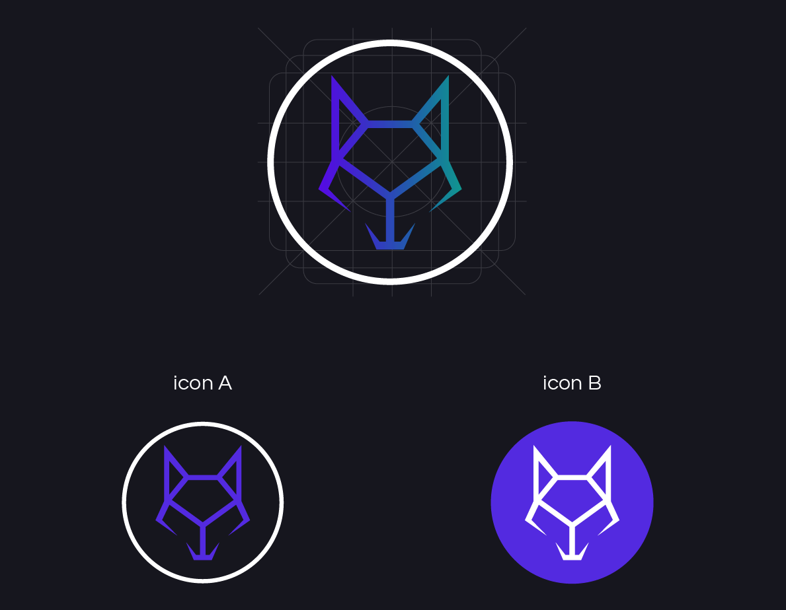

Novah
I was brought on to fully develop the brand of Novah—a software that manages your sales team for you—including logo and consult on the website. Novah wanted a brand built around a wolf mascot, representing a “pack,” as their software turns sales teams into.
The following shows how I designed the primary and alternate logo design lock-up, which will allow for greater flexibility when it comes to marketing, advertising and other brand identity uses and applications.
The logo includes brand name and wolf monogram.
The wolf monogram is also a standalone logo, which is used for the website, application, front of business cards, stationary and additional marketing materials.
